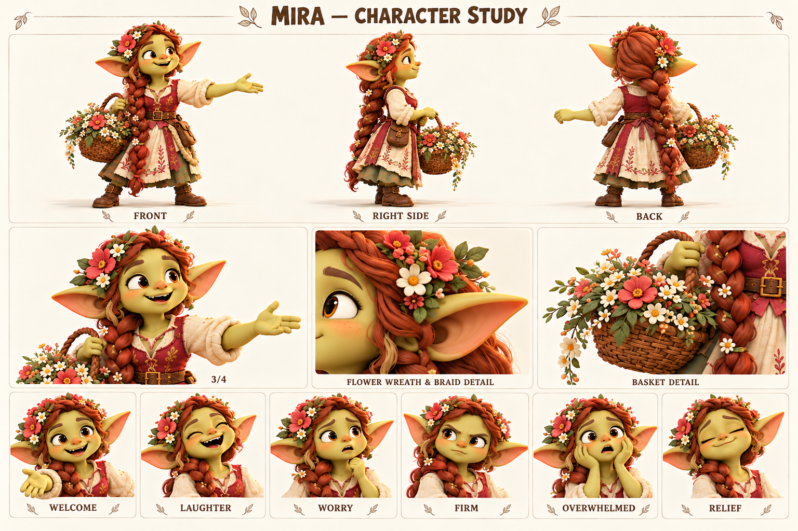

Чего хочет
Создавать места, где никто не чувствует себя лишним.
Умеет находить место для каждого и учится оставлять место для себя.
Взрослая жительница деревни, подруга Jo и Уны, устроительница общих праздников.

Длинная толстая медная коса; ягодный жилет; асимметричный венок; корзина.
Палитра: Медь / ягода / коралл / крем.
Мира привыкла собирать людей вокруг простых вещей: свежих цветов, длинного стола, истории, которую лучше слушать вместе. Она хорошо помнит, кто любит сидеть в тени, кому нужен стул повыше, кто стесняется прийти без приглашения. Её корзина — рабочий инструмент, а не только украшение: в ней цветы, ленты и мелочи, которые помогают месту стать гостеприимным.
Со временем жители стали обращаться к ней всякий раз, когда требовалось что-то устроить. Мире нравилось доверие, но она начала отвечать «конечно» даже тогда, когда уже не успевала. Однажды небольшой вечер у дома вырос в целую подготовку, и она пропустила любимую песню Уны, потому что всё ещё поправляла гирлянду. После этого Уна стала звать её не помогать, а слушать — приглашение, которое Мире оказалось непросто принять.
В будущей истории Мира может подготовить встречу путешественников, а дождь изменит все планы. Её обычная реакция — удвоить усилия и раздать поручения. Настоящий поворот наступит, когда она скажет, что не справляется одна, и позволит другим сделать по-своему. Праздник получится менее ровным, но она впервые останется на нём участницей, а не обслуживающей силой.
Создавать места, где никто не чувствует себя лишним.
Признавать собственную усталость и принимать несовершенную помощь.
Что без её постоянной работы люди разойдутся или кто-то останется забытым.
Берёт чужие задачи, контролирует детали и может отвечать за человека, которого хочет включить.
Социальная наблюдательность, щедрость, организованность и заразительное тепло.
Легко приглашает всех к столу, но сама всё время стоит рядом с ним.
Темп и ритм. Тёплая энергичная речь, легко называет собеседника по имени.
Слова и построение фразы. Заходи, найдём, вместе, кому удобно, осталось одно. Любит конкретные приглашения.
Юмор. Добрые наблюдения о подготовке и маленьком хаосе, без колких оценок внешности.
Под давлением. Слишком бодрый голос и длинный список дел; усталость слышно в короткой тишине.
Как проявляет заботу. Замечает потребность человека и предлагает выбор места или участия.
Чего избегать. Не сводить к свахе, сплетнице или безотказной обслуживающей подруге.
| Ситуация | Реплика или действие |
|---|---|
| Приглашение | Заходи. Место уже есть, стул сейчас найдём. |
| С Уной | Сыграй ещё раз. В этот раз я сяду и послушаю. |
| Поручение | Поможешь с цветами? Если хочется, конечно. |
| Перегрузка | Я сказала «ещё одно» уже пять раз. Мне нужна помощь. |
| Граница | Сегодня я не успею. Давай придумаем вместе. |
| Радость | Неровно вышло. Зато все здесь. |
| Подпись на листе | Состояние | Актёрская задача |
|---|---|---|
| WELCOME | Приветствие | Открытая ладонь, взгляд прямо к гостю. |
| LAUGHTER | Смех | Плечи двигаются свободно, глаза щурятся. |
| WORRY | Тревога | Брови вверх, взгляд быстро ищет недостающее. |
| FIRM | Твёрдость | Улыбка исчезает, ладонь останавливает без угрозы. |
| OVERWHELMED | Перегрузка | Пауза, широко открытые глаза, руки на мгновение пусты. |
| RELIEF | Облегчение | Выдох и спокойная улыбка, корзина опущена. |
Движение: Широкий приветственный жест, уверенное обращение с корзиной; в усталости движения мельчают, коса тяжело следует за поворотом.
| План | Что показывает |
|---|---|
| Общий план спереди | Силуэт, лицо, одежда, положение ступней; без потери главных признаков. |
| Боковой ракурс | Глубина фигуры, профиль лица, предметы на ремнях и посадка одежды. |
| Вид со спины | Причёска, крепления, рюкзак либо панцирь; признаки не зеркалятся. |
| Средний план в три четверти | Лицо вместе с характерным жестом и позой корпуса. |
| Крупные детали | Материал и узнаваемые предметы; особенности лица, уха, руки или панциря. |
| Шесть эмоциональных портретов | Взгляд, брови, рот и положение головы; у существ также усики, крылья и поза. |
Праздник, который спасает не идеальный порядок, а участие всех.